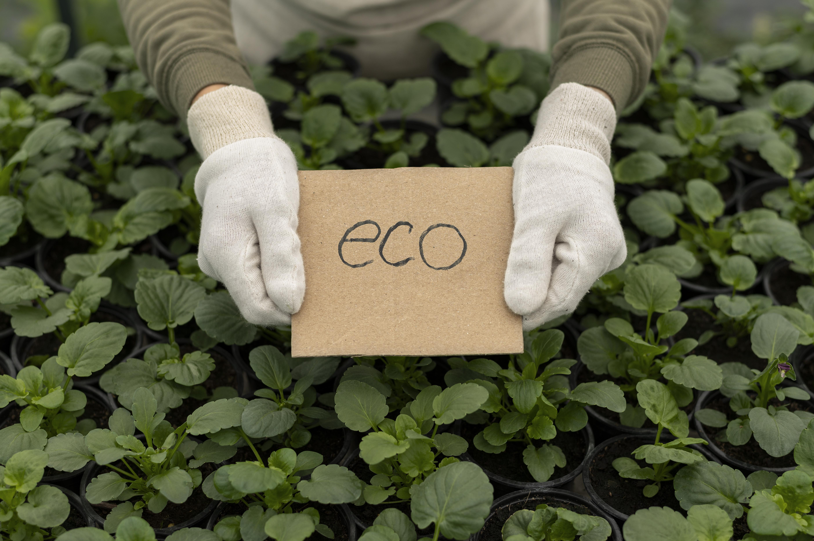
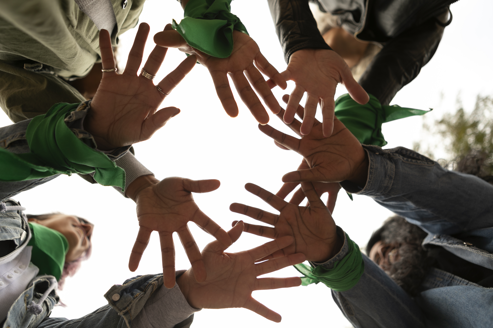

Ecosystem Governance
Key Principles
- Protect biodiversity and critical habitats.
- Use land and natural resources sustainably.
- Include local communities in decisions.
- Plan for future generations, not only short-term gains.
Ecosystem Services
Healthy ecosystem services is what keep us all going well and living on Earth. Fresh water and air, food, good soil are the basics for human beings to develop across the globe. Forests, wetlands and grasslands store carbon, regulate climate, filter pollutants and support biodiversity, which are all essential for the Life on Land and it requires our attention to protect what is working and restore degraded areas. Pollution, water misuse and overuse impacts directly on the wildlife and vital services for communities, like cropping, housing and mobility.


Community involvement
Community involvement is essential to make ecosystem protection real on the ground. Many actions linked to Goal 15 such as such as restoring forests, managing local water resources, and protecting wildlife habitats are sustained mainly by indigenous people, by farmers, youth voluntary groups and local residents. Decisions made by the habitants of these communities benefits the whole environment to keep sustainable livelihoods, conserving forests, the soil and whole biodiversity, sustaining their own well-being. Thoughout education, good training, researches and knowledge-sharing turns the goals of “Life in Land” into visible changes in areas, revitalising important landscapes.
Policy & planning
Policy and planning are the way that the ideas about ecosystem services become real decisions in how the land can be used and protected. Governments and institutions need to put biodiversity and ecosystem values in their plans, in the laws and strategies for a better development. This is about creating protected areas and restoring lands that are already degraded, making and enforcing rules about pollution and deforestation, measuring the impact of assessments in a way that new projects do not destroy important habitats and services they given to citizens. Good planning also means to have clear targets, like increasing green areas, restoring part of damaged ecosystems, and trying to have more biodiversity, avaliating these results over time.
Evolution of Ecosystem Governance
Rio Earth Summit
First global agreement on biodiversity and sustainable development
💡 Why It Mattered:
- First global commitment to biodiversity
- Convention signed by 196 countries
- Foundation for environmental governance
Millennium Ecosystem Assessment
Scientists map how ecosystems support human life
💡 Why It Mattered:
- First scientific consensus on services
- 60% of ecosystems were degrading
- Nature worth US$33 trillion/year
UN Sustainable Development Goals
Goal 15 established for Life on Land
💡 Why It Mattered:
- Life on Land became global priority
- 186 countries committed
- Connected conservation with development
Nature-Positive Governance
Global push for ecosystem restoration
💡 Why It Mattered:
- From 'do no harm' to 'restore'
- Private sector joining efforts
- Indigenous knowledge recognized
When soil stops holding water, rivers shrink and erosion speeds up.
Water drives life on land! Explore it in the interaction page. Click below.